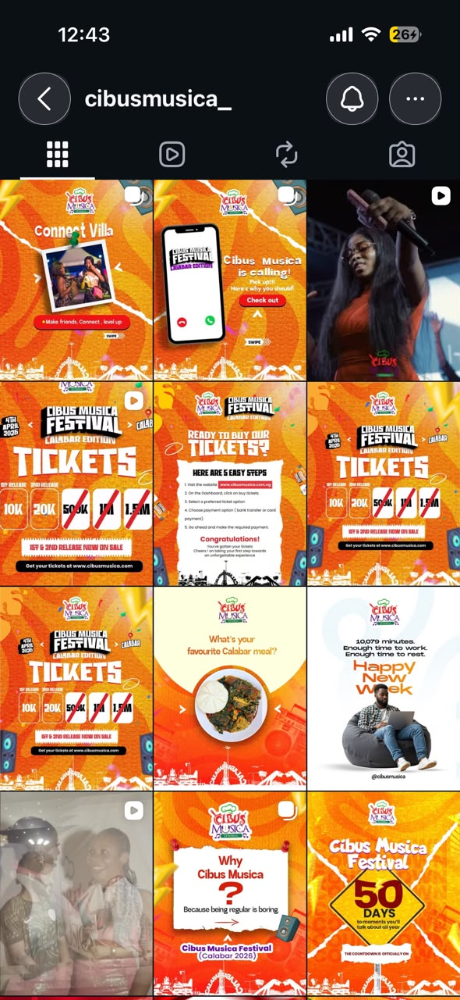
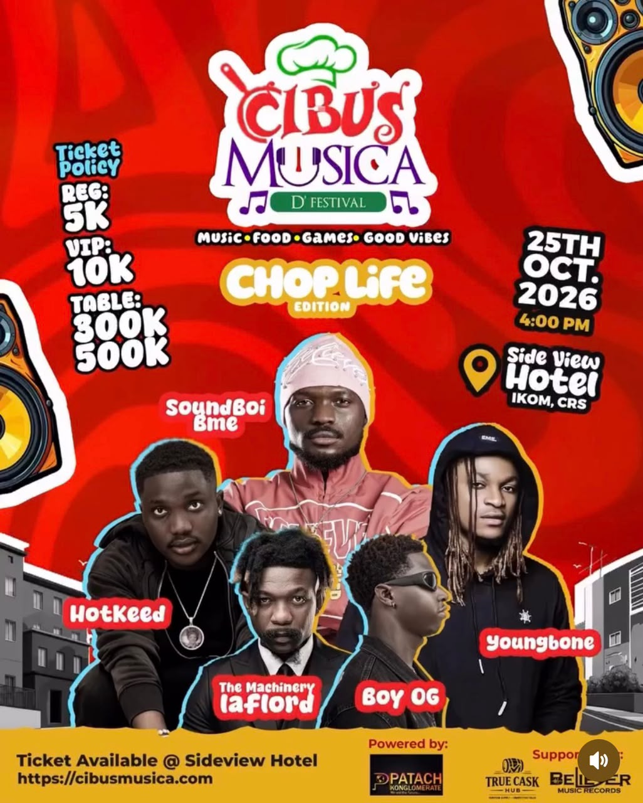
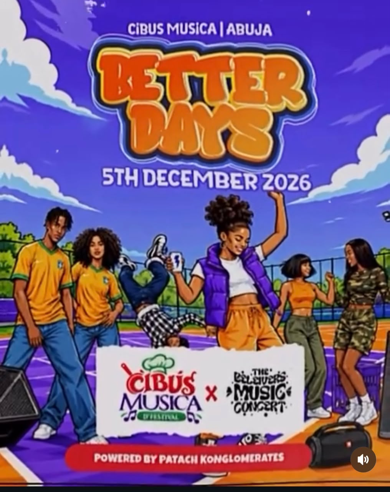
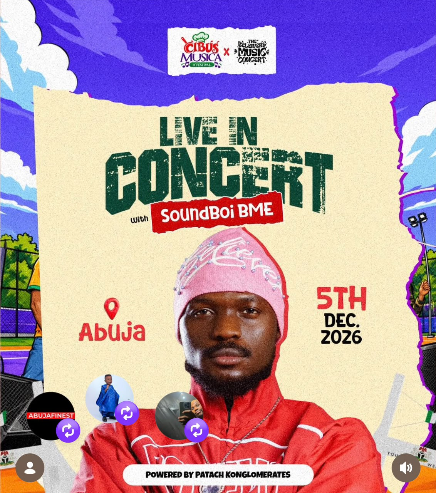
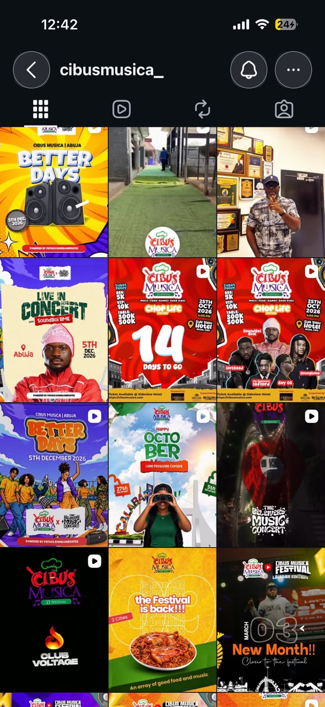
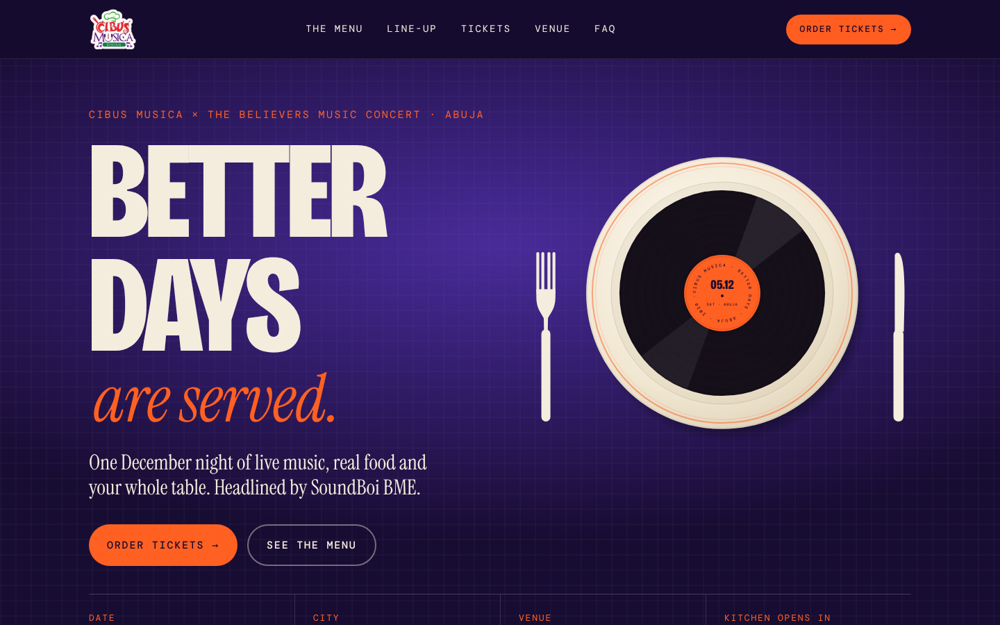

Audit, strategic diagnosis, creative direction and marketing strategy for Cibus Musica | Abuja — “Better Days”, Saturday 5 December 2026.
Cibus Musica has a genuinely ownable idea — a festival where food and music share the bill — and has proven it can deliver editions in Calabar (April) and Ikom (October). Its marketing, however, restarts from zero every edition: a new colour, a new typographic style and a new illustration approach each time. With Better Days 33 days away, the Abuja creative so far lacks a venue, a price, a single ticket link and any sign of the food that makes the brand different.
Prohub recommends one campaign platform — “Better Days Are Served.” — that speaks the language of a kitchen (“Now serving”, “What’s on the menu”, “Place your order”, “Last orders”). It is derived from the brand’s own name, gives every post a built-in call to action, and creates a repeatable content system for this and future editions. The campaign runs in four phases (Serve → Prove → Order → Last orders), anchored by a conversion-led landing page at cibusmusica.com/abuja and measured on tickets sold rather than likes.
Stop promoting each edition as a new flyer; build one festival brand whose December edition sells on desire, proof and urgency — and give every interested person a one-tap path to buy.
| # | Asset supplied | What it tells us |
|---|---|---|
| A | Instagram grid screenshot — Calabar Edition posts | Cibus Musica Festival, Calabar Edition, 4 April 2026. Ticket ladder 10K / 20K (1st & 2nd release) with 500K / 1M / 1.5M crossed out. Formats: ticket how-to (5 steps, cibusmusica.com.ng), countdown (“50 days”), “Why Cibus Musica? Because being regular is boring”, “Connect Villa”, local-food question, generic “Happy New Week”. |
| B | “Chop Life Edition” flyer | 25 Oct 2026, 4:00 PM, Side View Hotel, Ikom, CRS. Reg 5K · VIP 10K · Tables 300K / 500K. Line-up: SoundBoi BME, HotKeed, The Machinery Iaflord, Boy OG, Youngbone. Powered by Patach Konglomerate; supported by True Cask Hub and Believer Music Records. Tagline “Music · Food · Games · Good Vibes”. |
| C | “Better Days” teaser (Abuja) | Cibus Musica | Abuja × The Believers Music Concert, 5 December 2026. Powered by Patach Konglomerates. Illustrated characters on an outdoor court. |
| D | “Live in Concert with SoundBoi BME” flyer | Headliner for Abuja, 5 Dec 2026. Real portrait photography. No venue, time or ticket information. |
| E | Instagram grid screenshot — recent posts | Abuja announcements mixed with Chop Life countdowns, venue walk-through video, “Happy October — I see festivals coming”, “The festival is back — 2 cities”, Club Voltage, Believers Music Concert teaser. |
No third-party reference designs were supplied; all uploads are the client’s own materials. The creative benchmark (section 4) is therefore defined against the standard of premium international festival and hospitality campaigns rather than specific named references.
| Missing fact | Provisional handling in this proposal |
|---|---|
| Venue and gate time | “Abuja · venue reveal soon”. Designs leave a slot that updates on reveal day. Venue reveal used as a Phase 2 content moment. |
| Ticket tiers, prices, price-step dates | Tier names follow the Chop Life structure (Regular / VIP / Tables) as a provisional assumption; all prices shown as “₦ —” and labelled “client to confirm”. |
| Full line-up beyond SoundBoi BME | “More names served soon” — no artists invented. |
| Ticketing provider / checkout link | cibusmusica.com is used (as printed on the Chop Life flyer); landing page integrates whichever provider the client confirms. |
| Food vendors, games, sponsors for Abuja | Described generically (“Abuja’s favourite kitchens”); no vendor or sponsor named. |
| Role of The Believers Music Concert | Treated as co-host/co-brand as shown on the teaser. |
| Official handle and URL | Grid shows both @cibusmusica_ and @cibusmusica; ticket posts use both .com and .com.ng. We use @cibusmusica_ and cibusmusica.com pending confirmation. |
| Recap footage from Calabar / Ikom | Day 5 recap depends on it; fallback is attendee UGC. |
| Capacity and media budget | No numeric targets or fees are stated; targets to be set once known. |
| The “27th” date in the October post | Possibly a second December date (e.g. Calabar). Not used; to be clarified. |





| Criterion | Finding | A | B | C | D | E |
|---|
Because no third-party references were supplied, the Creative Director set the benchmark against the qualities that distinguish premium international festival and hospitality campaigns from local template work. The aim is not to copy any campaign, but to match their level of execution.
| Benchmark quality | What premium work does | Where Cibus Musica is today | Our standard for Better Days |
|---|---|---|---|
| Visual hierarchy | One dominant message, then 2–3 supporting facts | Up to 12 equal-weight elements | Headline → symbol → menu → date/city/URL |
| Typography | One display face + one text face, used with discipline | 4–6 decorative faces per design | 3 faces with fixed roles (display, serif voice, mono data) |
| Composition | Grid-based, intentional negative space | Edge-to-edge filling | Strict margins; space as a premium signal |
| Image treatment | One consistent grade across all imagery | Mixed photo, cut-out, illustration | Flash documentary photography; halftone duotone for artists |
| Storytelling | A campaign idea that generates content | Announcements only | “Better Days Are Served” vocabulary as a content engine |
| Brand consistency | Every edition recognisable as one brand | Restarts each edition | A system that rolls to Calabar 2027 by swapping content |
What the client is trying to achieve. Sell out Better Days on 5 December 2026 in Abuja, establish Cibus Musica as a credible multi-city festival brand, and grow the audience it can bring to future editions.
The real problems to solve.
The biggest opportunities. Own food as the differentiator; use the Ikom edition as proof; turn tables and groups into a sales engine; recruit the artist, the co-host and vendors as distribution; and concentrate selling into the month-end pay window.
For Abuja’s 20–38 social crowd planning their first December night out, Better Days is the concert that serves the whole evening — live music, real food, games and your people — so you never have to choose between going out to eat and going out to dance.
| Segment | Motivation | Barrier | Message | Channel |
|---|---|---|---|---|
| Plan-Makers (24–34) | Status in the group; a safe, well-run, photogenic night | Uncertainty about venue, quality, value | “Book the table. Be the hero of the group chat.” | Instagram, WhatsApp, X |
| Fans (18–30) | See SoundBoi BME live; content | Price; who else is on the bill | “Order Nº 01: SoundBoi BME, live.” | TikTok, IG, artist channels |
| Foodies | Discovering kitchens | Not seeing food in the creative | “Abuja’s favourite kitchens, one ground.” | Food creators, TikTok |
| Believers community | Their scene and people | Unfamiliar with Cibus Musica | “Our night, served bigger.” | Co-host channels, WhatsApp |
| Table & brand hosts | Hosting, visibility | Unclear table packages | “A table for the friends who move as one.” | Direct sales, WhatsApp Business |
Campaign concept — “Better Days Are Served.” The campaign speaks the language of a kitchen: Kitchen opens in (countdown) · Now serving (artists) · What’s on the menu (experience) · Place your order (tickets) · Tag your table (groups) · Last orders (final week) · Kitchen closed (sold-out tiers) · Served. (recap).
| Question | Answer |
|---|---|
| Why is this the right direction? | It comes directly from the brand name and the logo’s own tagline, so it strengthens Cibus Musica rather than renting a generic party aesthetic. |
| Why will it attract the audience? | Food is universal social currency in Abuja; “Better Days” at the end of a hard year is an emotional promise; the playful kitchen vocabulary is native to how Nigerians talk online. |
| What makes it different? | No Abuja concert positions food as part of the line-up. The plate-record symbol and menu typography look nothing like the torn-paper, sticker-collage category. |
| How will it generate attention? | A built-in series (Now serving Nº 01, 02…), debate content (Pick your plate), tag mechanics (Tag your table), and shareable lines (“Refund: all of 2026’s bad days”). |
| How does it drive tickets? | Every phrase is a call to action; “Place your order” maps directly to checkout; price steps and “Kitchen closed” stamps create visible urgency. |
| Why trust Prohub to execute? | Strategy, design, motion, web and media from one team on one system, with this proposal’s working assets as evidence of execution speed. |
| Activity | What we do | Contribution |
|---|---|---|
| Brand positioning | One platform across every edition; Better Days as Cibus Musica’s December chapter | Recognition compounds; lower cost per ticket over time |
| Audience targeting | Five segments with distinct messages; Abuja geo-targeting, ages 20–38 | Relevance → higher engagement and conversion rates |
| Content distribution | IG leads, TikTok for reach, WhatsApp to convert, X for live chatter | Each platform does the job it is best at |
| Organic marketing | Daily feed + stories, 4 short videos a week, Collab posts | Free reach; builds the warm audience paid media retargets |
| Paid advertising | Meta video reach → retarget engagers & site visitors with ticket ads; TikTok Spark Ads on proven organic | Scales what works; converts warm intent |
| Influencer marketing | Abuja food and nightlife micro-creators (10k–100k), each with a trackable code; artist and co-host posts | Trust and reach in niches; measurable sales per creator |
| Community engagement | Polls, debates, tag mechanics, replying to every comment, UGC reshares | Algorithmic lift; audience ownership |
| Ticket conversion | Landing page, 3-tap checkout, sticky mobile CTA, WhatsApp broadcasts | Removes friction between interest and purchase |
| FOMO creation | Published price steps, “Kitchen closed” stamps, pay-day push, last orders | Pulls purchases forward; protects against late sales risk |
Recommended paid split (proportions only, budget TBC): ~35% video reach (Phase 1–2), ~40% retargeting and conversion (Phase 2–4), ~25% boosting creator and artist content.
Measurement. Reach → saves & shares → link taps & WhatsApp opt-ins → tickets sold (by UTM and creator code) → check-ins. Numeric targets are set with the client once capacity, inventory and budget are confirmed. Weekly reports focus on cost per ticket and sell-through by tier.
What we deliberately avoid: invented scarcity (“only 50 left” unless true), giveaways that attract non-buyers, and vanity metrics reported in place of sales.
Five pillars — Serve (25%), Taste (20%), Prove (20%), Play (15%), Order (20%). Cadence: one feed post plus 3–5 stories daily, four Reels/TikToks a week, WhatsApp broadcast twice a week. The launch week (9–15 November) moves the audience from awareness to advocacy:
| Day | Post | Stage | Format | CTA |
|---|
Full captions, creative direction and purpose for each day: 04_SOCIAL_MEDIA_STRATEGY/Seven_Day_Content_Calendar.pdf.
Recommendation: a dedicated event landing page at cibusmusica.com/abuja, not a new website. A single conversion-focused page launches faster, keeps search and social equity on the main domain, and becomes a reusable template for each edition. A full site rebuild is unnecessary within the 33-day window.

A working, responsive HTML prototype is included in 05_WEBSITE_CONCEPT and _source/web.
| Area | Included in this proposal (concept) | Recommended for production |
|---|---|---|
| Identity | Campaign platform, palette, type, devices | Full toolkit + templates for all editions |
| Flyers | Main flyer + 2 alternative directions | Final key visual, venue/price updates, print versions |
| Social | 6 feed designs, 4 stories, 7-day calendar | 33-day calendar, ~30 feed posts, ~120 stories |
| Motion & video | Motion direction | Key-visual loop, artist reveals, recap edits, countdowns, event-day highlights |
| Web | Landing page prototype (desktop + mobile) | Live page, checkout integration, tracking |
| Media | Channel and paid strategy | Campaign set-up, creator management, weekly reporting |
Before the pitch was assembled, the Managing Director requested an independent critique from each department and resolved the conflicts below.
| Agent | Critique | MD decision |
|---|---|---|
| Marketing Strategist | Early mood-led concepts sold atmosphere but not tickets. Every post must carry a next step and a link; the hard sell should wait until intent is built. | Accepted. Soft CTA in every post; first hard-sell post on Day 6, to warm audiences. |
| Creative Director | Rejected continuing the cartoon illustration and torn-paper collage. Rejected framing the artist “on a plate” (unintended imagery) — the plate is reserved for the food × music symbol. Required halftone treatment to unify low-resolution artist photos. | Accepted in full. |
| Copywriter | Removed “unforgettable experience”, “priceless” and generic “Detty December” lines. Proposed “Refund: all of 2026’s bad days” as a shareable line. | Accepted; line used in Alt A. |
| Digital Experience | Argued against a full site rebuild in 33 days; asked for a sticky mobile CTA and tracking from day one. | Accepted: landing page under the existing domain. |
| Content Production | Day 5 recap depends on client footage; countdown must be a template; artist photos are low resolution. | Fallback (UGC) documented; footage and press photos added to client checklist. |
| Criterion | Score /10 | Note |
|---|---|---|
| Strategic relevance | 9 | Built from the brand’s name, the audit and the 33-day reality. |
| Creative originality | 8 | Plate-record and kitchen vocabulary are distinct from the category; photography still to be produced. |
| Visual execution | 8 | Consistent system across 13 assets and the web; artist imagery limited by source resolution. |
| Audience appeal | 8 | Food debate, tag mechanics and artist-led content suit the segments. |
| Marketing effectiveness | 8 | Clear funnel and tracking; targets pending capacity and budget. |
| Commercial value | 8 | Modular scope lets the client buy in at any level; reusable for future editions. |
| Presentation quality | 9 | Editorial deck, working prototype, consistent documentation. |
All designs are labelled as proposed visual directions. Prices, venue and additional artists are intentionally left as client-to-confirm fields.
| Risk | Mitigation |
|---|---|
| Late venue/price confirmation | Designs built with update slots; venue reveal planned as a content moment |
| No recap footage | UGC call-out to Ikom and Calabar attendees; Calabar footage as fallback |
| Low-resolution artist photos | Halftone treatment; request hi-res press kit |
| Approval delays | 24-hour approval SLA; one decision-maker on the client side |
Next steps: approval call this week → client fact sheet within 24 hours → final key visual and week-one content within 48 hours → campaign live Monday 9 November → landing page live by Friday 13 November.